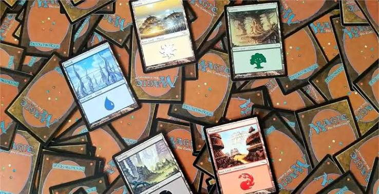
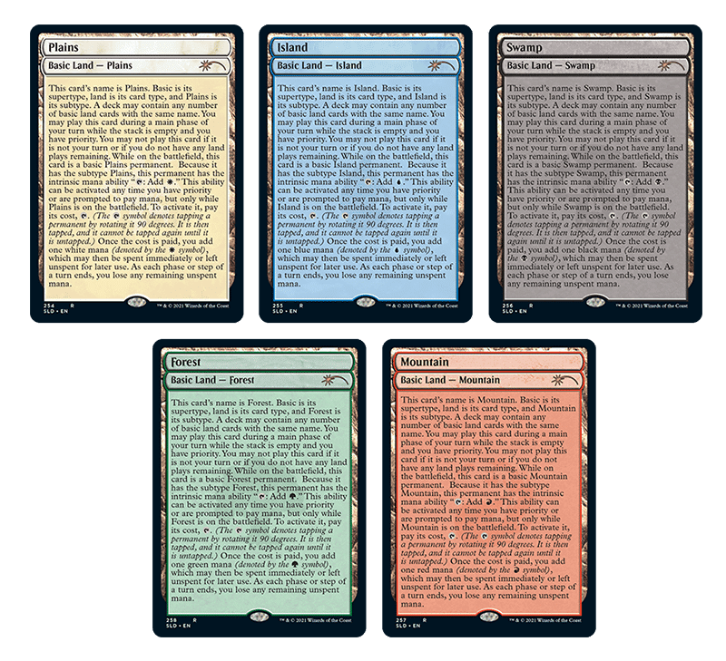
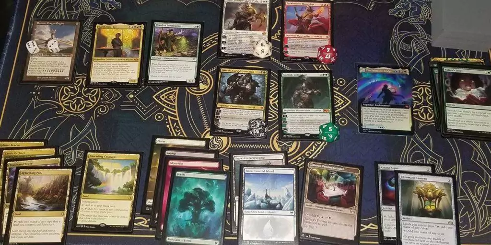
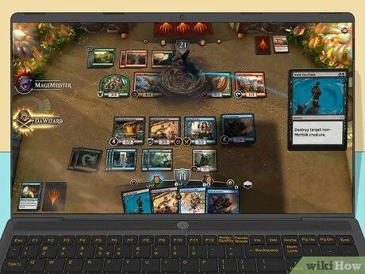

Welcome to the world of Magic: The Gathering (MTG)! Whether you are completely new to trading card games or simply looking to learn how Magic works, this guide will walk you through the basics of playing the game. Magic is a strategy-based card game where players take on the roles of powerful wizards, using creatures, spells, and magical abilities to defeat their opponents.

One of the most important things to understand when learning Magic is how a player's turn is structured. Each turn is divided into several phases, and each phase serves a specific purpose. These include the beginning phase, first main phase, combat phase, second main phase, and ending phase.

Understanding these phases is essential because knowing when you can play certain cards, attack, or respond to your opponent's actions can make the difference between winning and losing.

By the end, you should have the knowledge and confidence to understand the flow of a turn and begin playing Magic: The Gathering. Remember, the best way to learn is through practice, so take your time, experiment with different cards, and most importantly, have fun!
